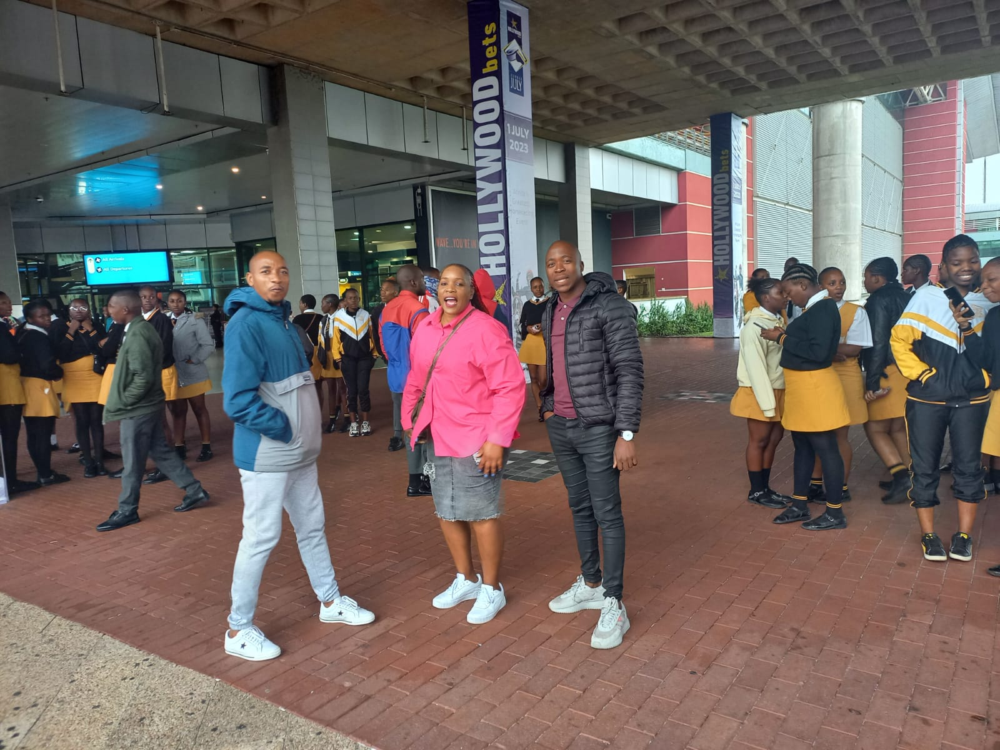
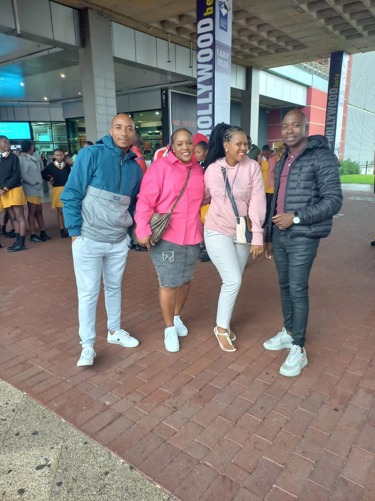
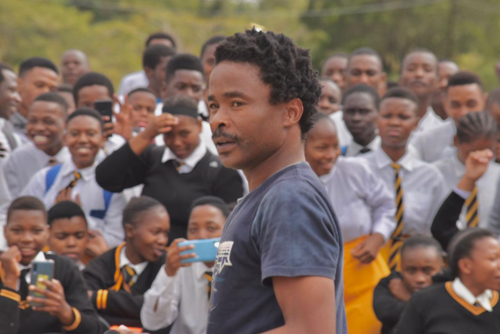
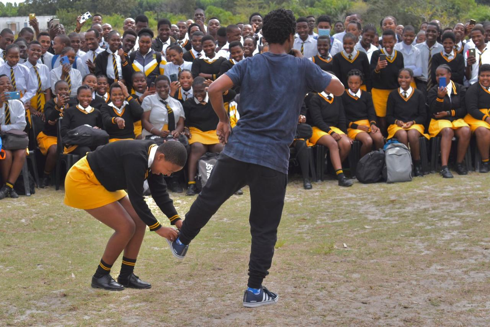
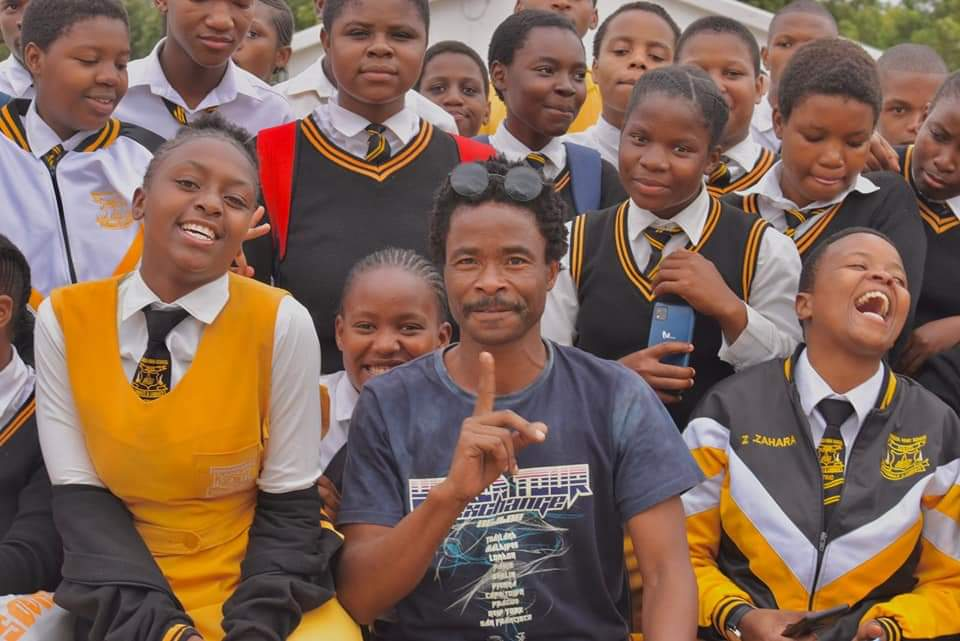

Matric Dance 2023
In the heart of South Africa, nestled amidst the beauty of nature, Shengeza High School's Class of 2023 bid farewell to their high school journey in a spectacular fashion. The venue: Phumobala Lodge, a picturesque setting that provided the perfect backdrop for an unforgettable day. As the sun dipped below the horizon, excitement crackled in the air. Learners, staff, and parents alike gathered, adorned in their finest attire, ready to celebrate this milestone moment. The atmosphere was electric, buzzing with anticipation and nostalgia. Dressed in the top and hottest outfits of the season, the learners radiated confidence and elegance. Each attire was a reflection of their unique personalities, showcasing their individual styles while collectively exuding sophistication and charm. From sleek suits to dazzling dresses, every ensemble spoke volumes about the journey they had undertaken together. Against the backdrop of the Lodge's enchanting scenery, laughter and joy filled the air as learners reminisced about cherished memories and shared dreams for the future. It was a day where time seemed to stand still, allowing everyone to savor the magic of the moment. The dance floor became a stage where dreams took flight, as learners twirled and spun to the rhythm of the music, their smiles illuminating the day. For a brief moment, worries and stresses faded away, replaced by pure jubilation and camaraderie. But it wasn't just the learners who were caught up in the enchantment of the day. Staff members, who had guided and supported these young individuals throughout their academic journey, looked on with pride and fondness. For them, witnessing the culmination of years of hard work and dedication was a moment of profound satisfaction. Parents, too, shared in the joy of seeing their children blossom into confident, capable young adults. As they watched their sons and daughters dance under the starlit sky, hearts swelled with pride and love, knowing that this was just the beginning of a new chapter filled with endless possibilities. As the final moments of the occasion approached, and the last notes of music faded away, there lingered a sense of bittersweet nostalgia. The matric dance at Phumobala Lodge had been more than just a celebration; it was a testament to the bonds forged, the memories created, and the futures awaiting these remarkable individuals. For Shengeza High School's Class of 2023, the matric dance was not merely an event; it was a magical journey—a day to remember, cherish, and carry in their hearts forever. And as they bid farewell to their alma mater, they stepped into the world with heads held high, ready to conquer whatever adventures lay ahead.
Read More...Our Staff in Capetown 2022
Amidst the bustling streets and breathtaking landscapes of Cape Town, the dedicated educators of Shengeza High School embarked on a journey of camaraderie, unity, and renewal. Their destination: a staff team-building retreat aimed at fostering stronger relationships and promoting teamwork among the school's faculty.
The trip wasn't just about sightseeing and relaxation; it was a deliberate effort to cultivate unity, solidarity, and cohesion among the school's educators. Through a series of team-building activities and workshops, the staff delved into the essence of collaboration and cooperation, learning to communicate effectively, trust one another, and work towards common goals.
But it wasn't just about the tasks at hand; it was about the connections forged along the way. As they laughed, learned, and supported one another, barriers dissolved, and friendships flourished. From seasoned educators to newcomers, everyone contributed their unique strengths and perspectives, enriching the collective experience.
As the retreat drew to a close, and the staff gathered for a final reflection session, there was a palpable sense of transformation in the air. What had begun as a simple trip to Cape Town had evolved into a profound journey of self-discovery, growth, and unity.
Armed with newfound insights and strengthened relationships, the educators of Shengeza High School returned home, ready to face the challenges and opportunities that lay ahead. For in the end, it wasn't just about the destination; it was about the journey—and the bonds that had been forged along the way.

Teachers and Learners During Educational Excursion In Durban, 2023
In the vibrant city of Durban, the grade 12 learners of Shengeza High School embarked on a transformative educational excursion that expanded their horizons and ignited their passion for learning. Guided by their dedicated teachers, they embarked on a journey of discovery, exploring the inner workings of essential institutions and uncovering the rich tapestry of opportunities awaiting them beyond the classroom.

Their first stop: the airport, a bustling hub of activity where dreams took flight and possibilities soared. Here, amidst the whirl of departure gates and arrivals boards, learners gained firsthand insight into the logistics of air travel, marveling at the seamless coordination required to keep operations running smoothly. For many, it was a glimpse into a world of endless possibilities, igniting aspirations of future adventures and global exploration.
Here
From the airport, the excursion continued to the bustling port, where massive cargo ships loomed against the horizon, symbols of interconnectedness and trade. Here, learners witnessed the intricate choreography of maritime logistics, gaining a deeper understanding of the global economy and the vital role ports play in facilitating commerce and exchange. Amidst the salty sea breeze, they pondered the vastness of the world beyond their shores, inspired by the knowledge that their potential knew no bounds.
Here
But it wasn't all about education; there were moments of leisure and enjoyment woven into the fabric of the excursion. Whether strolling along the sun-kissed beaches of Durban's famed Golden Mile or exploring the vibrant markets and cultural landmarks that dotted the cityscape, learners and teachers alike reveled in the joy of shared experiences and newfound connections.

As the sun dipped below the horizon, casting a warm glow over the city, the grade 12 learners returned home, their hearts and minds enriched by the memories of their educational excursion to Durban. For in those fleeting moments of discovery and adventure, they had not only expanded their knowledge but also broadened their perspectives, laying the foundation for a future filled with endless possibilities and boundless opportunities.
Shengeza High School's Awareness Day, 2023
At Shengeza High School, empowering learners with knowledge and awareness about crucial life topics was paramount. In 2023, the school organized an impactful Awareness Day, inviting students to engage in meaningful conversations about pressing issues such as drugs, pregnancy, alcohol, dating, depression, anxiety, and more. The event was not just a lecture series; it was a dynamic and interactive experience designed to resonate with learners on a personal level. Guest speakers, including notable South African TV stars like "Screw Driver" from Uzalo, lent their voices to the cause, sharing their own stories and insights with the eager audience. Throughout the day, learners participated in workshops, discussions, and activities aimed at fostering open dialogue and equipping them with the knowledge and tools to navigate life's challenges. From informative sessions led by healthcare professionals on the dangers of substance abuse to peer-led discussions on mental health and well-being, each segment of the program addressed a different aspect of holistic wellness.  One of the highlights of the event was a panel discussion featuring the visiting TV stars, who not only shared their experiences portraying complex characters on screen but also offered invaluable advice on staying grounded, making wise choices, and prioritizing self-care in the face of societal pressures. But perhaps the most powerful moments came from within the Shengeza High School community itself. Learners bravely stepped forward to share their own stories of triumph over adversity, inspiring their peers with tales of resilience, strength, and hope. As the gathering came to an end, there was a palpable sense of empowerment in the air. Armed with newfound knowledge, empathy, and support networks, the learners of Shengeza High School left the Awareness Day event with a renewed sense of purpose and determination to take charge of their futures.  In the days and weeks that followed, the conversations sparked on Awareness Day continued to reverberate throughout the halls of Shengeza High School, creating a culture of understanding, compassion, and empowerment that would endure long after the event had ended. And as each learner walked away with a deeper understanding of themselves and the world around them, they embarked on a journey of self-discovery and growth that would shape the rest of their lives. 
Read More...
Mr. CN Mthembu Returns to Shengeza High School with Uzalo Crew, 2023
In a heartwarming reunion, former Shengeza High School educator Mr. CN Mthembu, known affectionately as Mr. Vibe or Nyawo from Uzalo, made a triumphant return to Shengeza High School, accompanied by his fellow Uzalo crew members. Their mission: to give back to the community that had shaped Mr. Mthembu's journey and to inspire the next generation of learners.
 Amidst the excited chatter and anticipation, Mr. Mthembu and his crew were welcomed with open arms by the staff and students of Shengeza High School. The air buzzed with excitement as learners eagerly awaited the chance to meet their hometown hero and hear his words of wisdom.
Amidst the excited chatter and anticipation, Mr. Mthembu and his crew were welcomed with open arms by the staff and students of Shengeza High School. The air buzzed with excitement as learners eagerly awaited the chance to meet their hometown hero and hear his words of wisdom.
 But Mr. Mthembu's visit wasn't just about star-studded selfies and autographs; it was a testament to his commitment to making a difference in the lives of others. In a touching gesture of generosity, he presented the school with a donation of uniforms and sanitary towels, ensuring that every learner had access to the resources they needed to thrive.
But Mr. Mthembu's visit wasn't just about star-studded selfies and autographs; it was a testament to his commitment to making a difference in the lives of others. In a touching gesture of generosity, he presented the school with a donation of uniforms and sanitary towels, ensuring that every learner had access to the resources they needed to thrive.
 As he took to the stage, Mr. Mthembu's charisma and passion filled the room, captivating his audience with tales of his own journey from the halls of Shengeza High School to the bright lights of the entertainment industry. With humility and grace, he shared the lessons he had learned along the way, emphasizing the importance of resilience, hard work, and never giving up on one's dreams.
As he took to the stage, Mr. Mthembu's charisma and passion filled the room, captivating his audience with tales of his own journey from the halls of Shengeza High School to the bright lights of the entertainment industry. With humility and grace, he shared the lessons he had learned along the way, emphasizing the importance of resilience, hard work, and never giving up on one's dreams.
 As the event neared its conclusion, there was a sense of gratitude and inspiration in the air. For the learners of Shengeza High School, Mr. Mthembu's visit was more than just a celebrity appearance; it was a reminder that success is not measured by fame or fortune, but by the impact we have on the lives of others.
As the event neared its conclusion, there was a sense of gratitude and inspiration in the air. For the learners of Shengeza High School, Mr. Mthembu's visit was more than just a celebrity appearance; it was a reminder that success is not measured by fame or fortune, but by the impact we have on the lives of others.